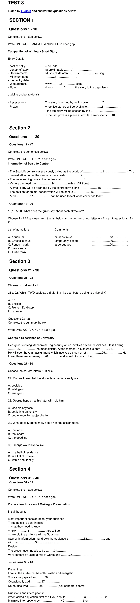

IELTS Listening: Test 3
Listening and questions
Section 1Questions 1–10
Questions 1–10
Complete the notes below.
Write ONE WORD AND/OR A NUMBER in each gap
Competition of Writing a Short Story
Entry Details
cost of entry: 5 pounds
Length of story: approximately 1
Requirement: Must include a/an 2 ending
Minimum age: 3
Last entry date: 4
Web address: www 5 com
Rule: do not 6 the story to the organisms
Judging and prize details
Assessments: The story is judged by well known 7
Prizes: + top five stories will be available 8
+the top story will be chosen by the 9
+ the first prize is a place at a writer’s workshop in 10
Section 2Questions 11–20
Questions 11–17
Complete the sentences below:
Write ONE WORD ONLY in each gap
Information of Sea Life Centre
The Sea Life centre was previously called as the World of 11 - The newest attraction at the centre is the splash 12
The main feeding time at the centre is at 13
Visitors can feed the 14 with a VIP ticket
A small party will be arranged by the centre for visitor’s 15
The petition for animal conservation will be sent to 16
A/An 17 can be used to test what visitor has learnt
Questions 18–20
18 & 19 & 20 What does the guide say about each attraction?
Choose THREE answers from the list below and write the correct letter A - E, next to questions 18 -
List of attractions: Comments:
A. Aquarium must not miss 18
B. Crocodile cave temporarily closed 19
C. Penguin park large queues 20
- D Seal centre
- E Turtle town
Section 3Questions 21–30
Questions 21–22
Choose two letters A - E,
21 & 22 Which TWO subjects did Martina like best before going to university?
Questions 23–26
Complete the summary below:
Write ONE WORD ONLY in each gap
George’s Experience of University
George is studying Mechanical Engineering which involves several disciplines. He is finding
23 the most difficult. At the moment, his course is only 24
He will soon have an assignment which involves a study of jet 25 He thinks there are too many 26 and would like less of them.
Questions 27–30
Choose the correct letters A, B or C
27 Martina thinks that the students at her university are
28 George hopes that his tutor will help him
29 What does Martina know about her first assignment?
30 George would like to live
Section 4Questions 31–40
Questions 31–35
Complete the notes below:
Write ONE WORD ONLY in each gap:
Preparation Process of Making a Presentation
Initial thoughts:
Most important consideration: your audience
Three points to bear in mind
+ what they need to know
+ how 31 they will be
+ how big the audience will be Structure:
Start with information that draws the audience’s 32 end with next 33
Design:
The presentation needs to be 34
Vary content by using a mix of words and 35
Questions 36–40
Presenting:
Look at the audience, be enthusiastic and energetic
Voice - vary speed and 36
Occasionally add 37
Do not use weak 38 (e.g: appears, seems)
Questions and interruptions:
When asked a question, first of all you should 39 it
Minimise interruptions by 40 them.
Show the original book pages (picture)

Tap or click the pages to open them full size in a new tab.
Check your answers
Marking ignores capital letters and accepts plurals and the usual alternative answers. If your answer is right but not accepted, press My answer is also right under it.
Tapescript
Check your answers first, then the tapescript opens here.